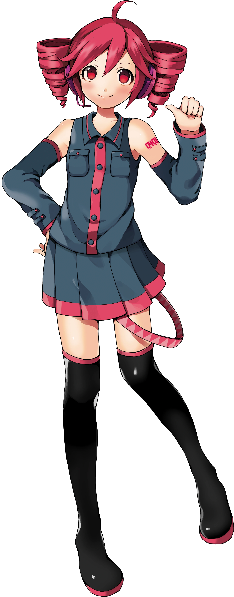
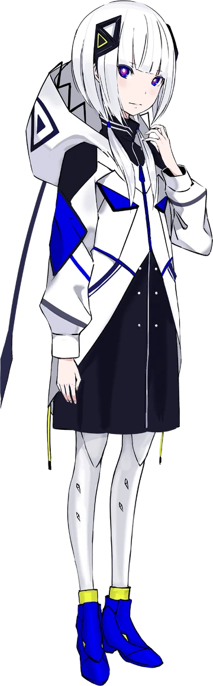

¡Explora!
¿Que otros programas existen?
Kasane Teto es una cantante virtual japonesa creada el 1 de abril de 2008 como una broma del Día de los Inocentes en el foro 2channel. Inicialmente fue presentada como una nueva Vocaloid, pero en realidad fue desarrollada para UTAU, un software gratuito de síntesis de voz. Su popularidad creció rápidamente, convirtiéndola en una de las UTAUloids más icónicas. Su voz es proporcionada por Mayo Oyamano, y se caracteriza por un tono enérgico y juvenil. Estéticamente, Teto tiene el cabello rojo en dos coletas rizadas, ojos rojos, y su diseño recuerda a los Vocaloids originales, como Hatsune Miku. Aunque tiene una apariencia adolescente, su edad oficial es 31 años, parte de su carácter excéntrico y humorístico. Teto es conocida por su personalidad tsundere (una mezcla de ternura y carácter fuerte), y su objeto representativo es una baguette. Su número de modelo es 0401, en alusión a su fecha de creación. A lo largo de los años, ha evolucionado tecnológicamente: en 2021 se integró en el software TALQu, en 2023 recibió un banco de voz AI para Synthesizer V, y en 2025 se adaptó para VOICEPEAK, ampliando su capacidad para hablar y cantar en múltiples idiomas. A pesar de haber nacido como una broma, Kasane Teto se ha ganado un lugar duradero en la cultura Vocaloid y UTAU, con una base de fans sólida, colaboraciones musicales, y apariciones en conciertos virtuales.
Kagamine Rin y Len son cantantes virtuales desarrollados por Crypton Future Media y lanzados el 27 de diciembre de 2007 para el software Vocaloid 2. Aunque a menudo se los considera gemelos por su diseño y nombres complementarios, oficialmente son “reflejos” uno del otro, dejando su relación abierta a la interpretación del usuario. Sus voces fueron proporcionadas por la actriz de voz Asami Shimoda, y desde entonces han sido actualizados para Vocaloid 4 y posteriormente para Piapro Studio con mejoras en calidad y expresividad. Rin tiene una voz brillante y enérgica, ideal para pop, rock y canciones emotivas, mientras que Len posee un timbre juvenil pero versátil, que se adapta bien a estilos más suaves o dramáticos. Visualmente, ambos tienen el cabello rubio corto y usan auriculares grandes con un diseño futurista en blanco, negro y amarillo. Rin suele llevar un lazo grande en la cabeza, mientras que Len tiene una coleta y un uniforme similar. Son conocidos por una amplia variedad de canciones populares como "Meltdown", "Kokoro", "The Lost One’s Weeping", "Servant of Evil" y "Remote Control", que exploran desde emociones profundas hasta historias complejas. A lo largo de los años, Rin y Len se han convertido en figuras centrales dentro del universo Vocaloid, con miles de canciones, ilustraciones y presentaciones en conciertos en vivo a través de hologramas. Su versatilidad y carisma los mantienen entre los personajes más queridos por la comunidad.
KAFU es una cantante virtual japonesa lanzada el 30 de julio de 2021, desarrollada por el proyecto CeVIO AI en colaboración con el productor KAMITSUBAKI STUDIO. Su voz está basada en la cantante y vocaloidista KAF, una artista virtual que debutó en 2020 y ha ganado gran popularidad por su estilo musical emotivo y atmosférico. KAFU fue diseñada para permitir que los productores recrearan la voz de KAF en sus propias canciones usando inteligencia artificial. Su voz se destaca por ser suave, melancólica y expresiva, con una capacidad notable para transmitir emociones complejas. Esto la ha convertido en una herramienta popular entre compositores que buscan una interpretación más humana y artística. Visualmente, KAFU comparte el estilo etéreo y misterioso de KAF, con un diseño elegante y futurista. Su estética mezcla lo tecnológico con lo poético, en línea con el enfoque artístico de su estudio creador. Aunque no forma parte del mundo Vocaloid o UTAU tradicional, se ha consolidado como una figura central en la nueva generación de cantantes virtuales con voz AI. KAFU ha protagonizado numerosas canciones exitosas dentro del ecosistema CeVIO y KAMITSUBAKI, muchas de ellas producidas por KAF o artistas afiliados al estudio. Su llegada marcó un paso importante hacia una síntesis vocal más realista, y ha sido clave en la expansión del concepto de cantantes virtuales como verdaderos artistas.
